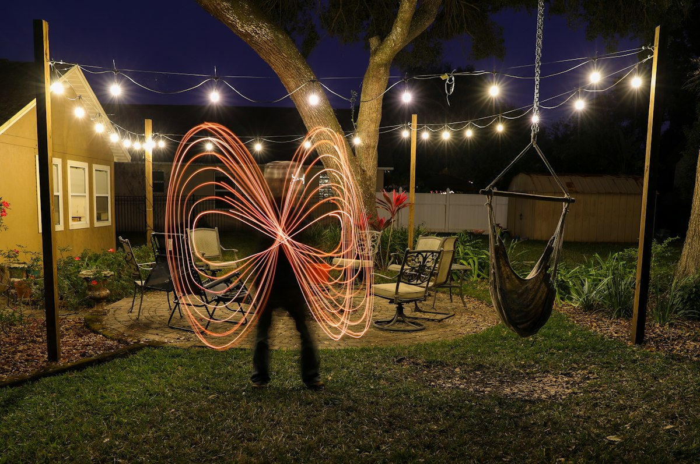

Smart telescope discounts force a comparison the deal copy avoids
Space.com's November markdown is the one figure a buyer can check before purchase, and it moves the instrument across a class boundary.

What the headline admits
The Space.com headline hedges before it commits. Five words of qualification sit in front of a superlative, and the money claim arrives with no hedge at all. The piece is dated November 25, 2026, and its URL files it in the site's skywatching kit section, which is where the commerce copy lives.
A $500 markdown is the only figure in that announcement a reader can verify before buying anything. In this category, discount size tracks aperture and sensor area better than any adjective in the copy does. A cut that large moves an instrument across a class boundary. The discount is the part of the announcement that can be checked. Everything around it asks to be believed.
Why aperture decides the nebula question
Planets are bright. Faint emission regions give up almost nothing per minute. That difference sets the whole buying decision, and the deal copy never states it. A planet gives back a usable frame in minutes of sitting under the sky. A faint nebula asks for an accumulation long enough that the collection area decides whether the target ever rises above the background. How long depends on the glass the light passes through before it reaches the sensor.
Sky brightness sets the floor that a target has to clear, and a suburban yard raises that floor more than any accessory sold for these instruments. An evening of accumulation under a streetlight and an evening under a mountain are different pictures from the same tube. Nothing in a discount changes which of those the buyer owns.
The software pitch, weighted honestly
The strongest case against treating a telescope as an aperture problem is that most buyers never use the aperture they paid for. A smart telescope sells a finished pipeline: the mount finds the object, the app accumulates, and the picture arrives on a phone. Nobody who abandons a reflector in a hallway closet was stopped by photon statistics. They were stopped by setup. On that account, the unit someone actually carries outside beats the better one they leave in the hallway. A discount widens the pool of buyers who ever finish a frame, and finished frames are the product.
That argument holds until the target list. A beginner who photographs the Orion region and comes back with a gray smudge has met the collection area. The app cannot enlarge it. Automation removes alignment from the conversation and keeps the sky exactly as bright as it was. A discount cannot add glass the object lacks, and no stack rescues a signal that never crossed the noise floor.
What one headline cannot tell you
The material supplied here is a commerce headline and the URL that files it. The model name is absent. That is enough to know a discount exists and not enough to know what it discounts. The base price is unstated, so a percentage cannot be calculated and the markdown stays a raw number with no denominator. The funding source is unstated, so nobody can say whether a vendor cut its margin or a retailer cleared shelf space. The window is unstated, which is the difference between a sale and a rumor.
The shape of the recommendation is invisible too. Nebula targets differ enormously in difficulty. The same tube returns the Orion region as a bright, recognizable shape and leaves the Veil Nebula buried inside a background gradient. Whether a person finished an integration on this instrument is not in the headline. Some recommendation copy is assembled from a published spec sheet and a supplier press kit, and readers cannot tell which kind they are holding.
Where a $500 cut lands
A $500 markdown is a fixed sum attached to an unknown total, and a fixed sum behaves differently at different levels of a price range. On an expensive instrument it reads as a seasonal rounding error in a retailer's calendar. On a mid-size one it can be the difference between this tube and a larger tube. That ratio is the only useful arithmetic in the announcement, and it is the arithmetic a headline cannot perform.
Nebula work punishes a small aperture twice. The target is faint, so it needs a long accumulation to rise above the local sky. The target is also broad, so a short tube with a small sensor fills the frame and pays for that coverage in resolution. Frame filling and photon collecting pull against each other. A price cut changes the cost of the second problem while leaving the first untouched. A comparison of that kind belongs in the announcement. A markdown cannot carry it.
The deal as a signal about stock
Several ordinary pressures move a mid-priced instrument that far down in late November. Retail clears optics before the gifting quarter closes. A manufacturer with a successor on the schedule protects its dealer inventory first. Both are about stock. Neither explanation describes the sky, and neither one arrives with a buyer's night count or the transparency of their site. The app version running when the box arrives is also missing from the page.
A buyer who treats the markdown as the starting point ends up shopping for nights, and nights are the scarce item. The honest sequence runs the other way. It starts with the site and the target list, then asks what money can move. Most deal copy reverses that order, because reversing it is what a coupon exists to do.
What remains unknown
Nothing in the material supplied identifies the instrument, its aperture, its sensor, or the price before the markdown. The recommendation cannot be reproduced, checked, or argued with, because the recommendation arrives as a headline and a link. This piece takes the announcement as evidence of how the category sells rather than as a review of a product. That is a narrower claim than the source made, and it is one that survives the missing fields.
The open questions are specific. The page does not name which instrument received the markdown, or who absorbs the cost of it. It does not say whether the software caps integration length, export resolution, or access by model year. None of those answers changes the physics argued above, and all of them change what a buyer should do with a price cut.
What a buyer can check anyway
Start with the sum nobody can hide. The markdown in that headline is $500 and the piece carries the date November 25, 2026. Both facts belong to that day. A strikethrough price records a reference rather than a transaction, and reference prices in this category get revised quietly. Everything else here is reasoning from a category rather than a spec sheet, and reasoning can be disputed.
Aperture is a coupon that never expires.
Then do the comparisons the copy skips. First, list every instrument reachable at the discounted total and rank them by aperture and by the longest integration the software will allow. Second, look at the same listing on several nonconsecutive days and write down what the seller calls the regular price each time. Write the discounted total down too, with the date beside it. If that reference number moves between checks, compare the totals and forget the percentage. Those tasks take an evening at most and they yield a judgment the announcement did not contain.